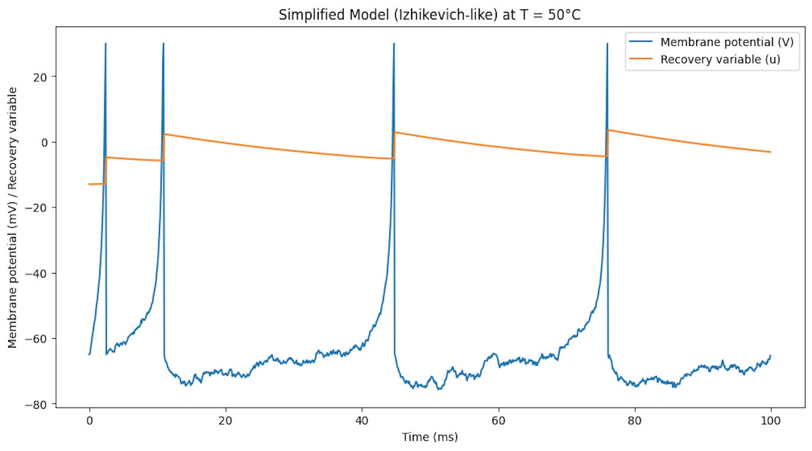
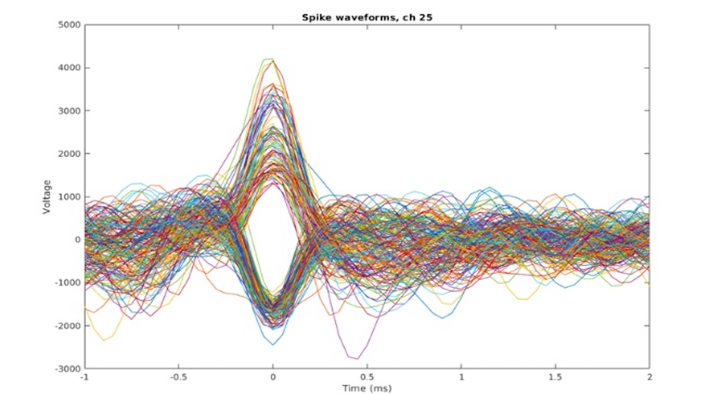

Simulations
Simplified single-neuron models that simulate membrane potential and recovery dynamics.
My current research focuses on somatosensory processing and sensorimotor integration in neurodegenerative disease and limb loss. This work integrates neuroscience and engineering principles to examine electrophysiological activity and understand how neural systems represent sensation and movement.

Simplified single-neuron models that simulate membrane potential and recovery dynamics.

Spike detection and waveform extraction from 60-channel microelectrode array recordings.

iPSC-derived neural cultures grown on microelectrode arrays to record network activity in Huntington’s disease and wild-type lines.

Functional connectivity between electrodes, mapped from the timing of spikes across the array.